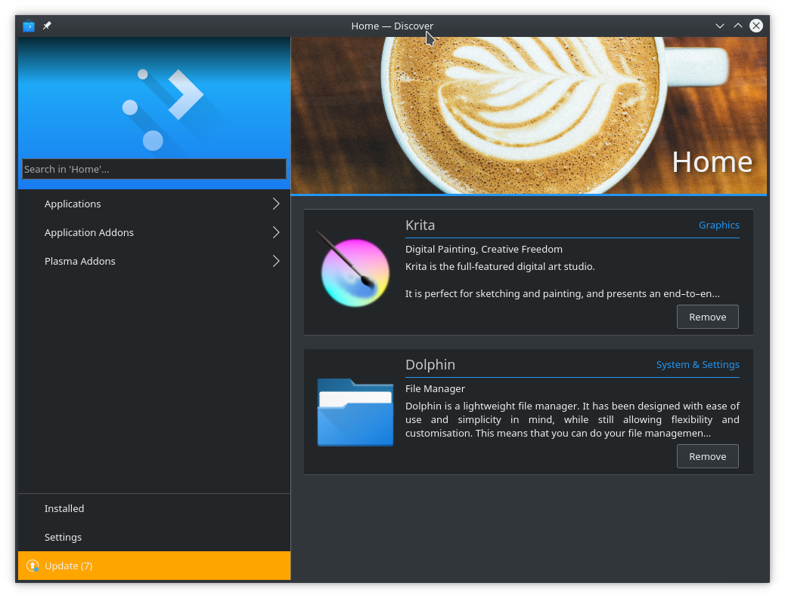

You can further customize your Kubuntu installation by adding new software packages. Below you will find several methods to install new packages (software).
There are several ways to manage applications in Kubuntu. A convenient way to add or remove applications is with a package manager.
By default Kubuntu comes with a great package manager called Discover. Discover is an advanced program with a graphical user interface (GUI) for installing and removing applications. It will automatically notify you for updates (in the lower right hand corner), but you can use it at anytime to install new packages by going to KickOff and type . Select Discover from the results. If you prefer the Ubuntu-style “Software Center” you will need to install it from within Discover.
Discover might provide information about required dependencies, these are other packages (programs) that the piece of software that you want to install needs to run. Once this information is acknowledged, the required packages will begin downloading. When the installation process is complete, the software will be ready to use. It is rarely necessary to restart the system after software installation or updates. If it is, the system will warn you and give you a restart icon to do the restart at your convenience.
Discover also provides an easy method to remove software that is no longer needed.
|
Thousands of programs are freely available to install in Kubuntu. These programs are stored in software archives (“repositories”) and are made available for installation over the Internet. Installing new programs in Kubuntu is quick, reliable, and secure because each program is built specifically for Kubuntu and is checked thoroughly before it is made available. Kubuntu repositories are categorized into four groups:
Two factors are used to determine categories
The standard Kubuntu LiveDVD contains some software from the “Main” and “Restricted” categories. Once a system has information about the Internet-based locations for these repositories, more programs are available for installation. Using the software package management tools installed by default, it is possible to discover, install, and update any piece of software directly over the internet without the need for the LiveDVD.
For more information about managing repositories, click on Managing Repositories.
Personal Package Archives allow any person in the Ubuntu community who has committed to observe the Ubuntu Code of Conduct to upload Ubuntu source packages to be built and published as an apt repository by Launchpad. Software from Launchpad’s Personal Package Archive (PPA) requires a GnuPG (GPG) key so your system can verify that it’s getting the packages from the correct source and that the packages have not been interfered with since they were built. GnuPG is GNU’s tool for secure communication and data storage.
For more information about PPAs, see Managing Personal Package Archives.
The package files associated with Kubuntu have the ”.deb” suffix because of Kubuntu’s close relationship with the Debian GNU/Linux distribution. Individual ”.deb” files can be downloaded and installed. Humble Bundles, for instance, distribute debs. Administrative privileges are required.
Files with the .tar.gz or .tar.bz2 suffix are package files known as “tarballs” or “source” packages. These are widely used in Linux. If there is no native Kubuntu package available in any of the repositories, it may be possible to compile and install the package from source. For tips on compiling software, look at the Compiling Software page on the Ubuntu Wiki.
On every Operating System (Windows, Mac OS X, and Linux) there are programs called Drivers which you install on your computer. These Drivers let your computer use new hardware or existing hardware, like Wifi. There Drivers also cover your graphics card e.g NVIDIA, AMD, sometimes the nonfree or restricted drivers let the cards perform better than the free ones. The Driver Manager handles installing and uninstalling these for you. These improvements may cover gaming, video editing and processing to image editing.